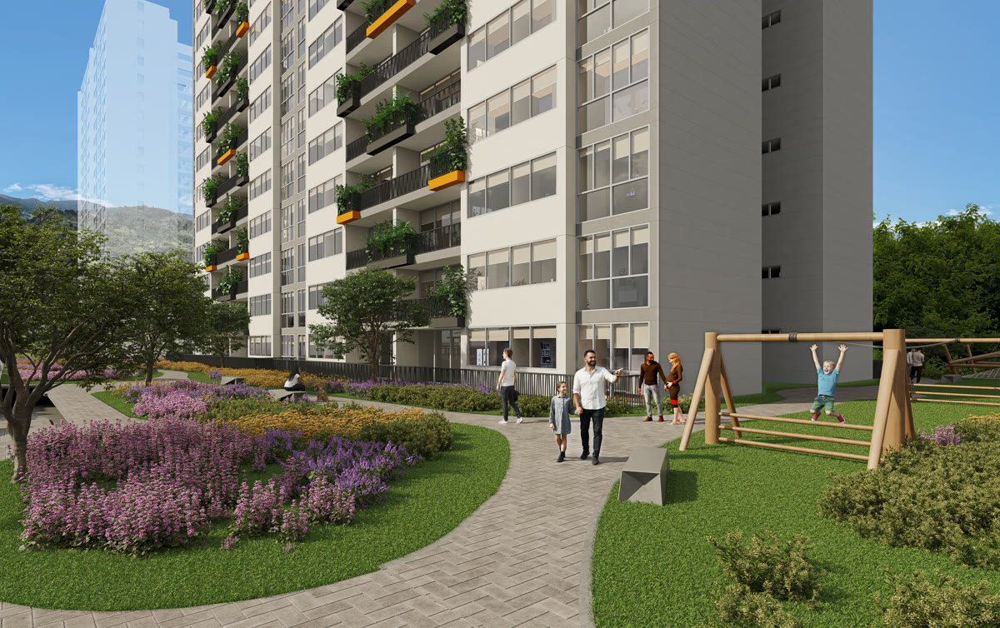
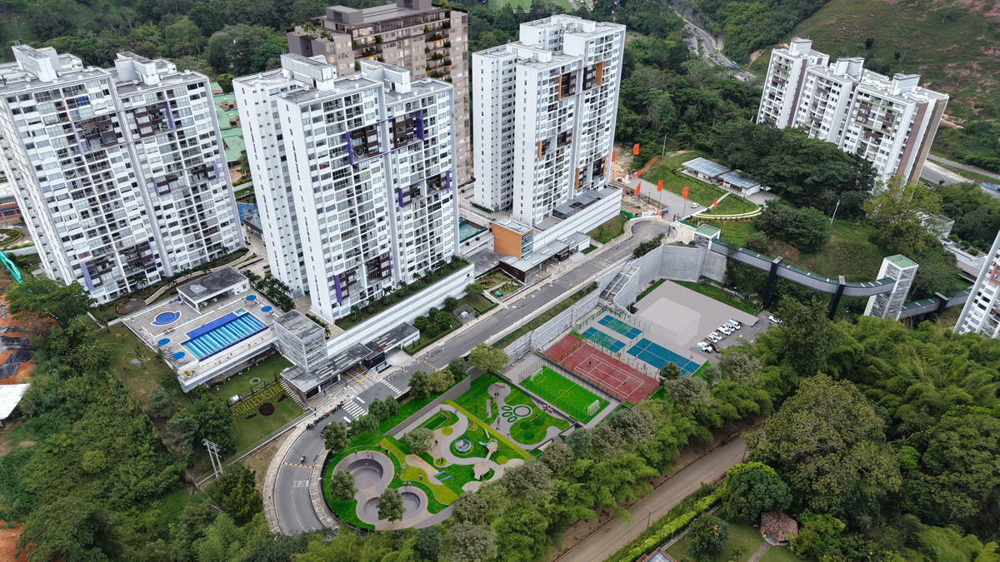

| 03 | Esencia de marca |
| 04 | Logotipo |
| 05 | Construcción y protección |
| 06 | Versiones |
| 07 | Usos incorrectos |
| 08 | Color |
| 09 | Tipografía |
| 10 | Jerarquía tipográfica |
| 11 | Recursos gráficos |
| 12 | Fotografía y tono |
| 13 | Logotipo Abadías |
| 14 | Convivencia de marcas |
| 15 | Marcas aliadas |
| 16 | Aplicaciones |
| 17 | Datos obligatorios |
Naturaleza
Senderos, zonas verdes y terraza jardín en cada apartamento. La flor del logo nace de esta idea.
Bienestar
Un club con más de 25 espacios: zona deportiva, fitness, recreativa y wellness.
Diseño
Arquitectura moderna, espacios flexibles y certificación EDGE de sostenibilidad.
| Elemento | Descripción |
|---|---|
| Imagotipo | Flor de cinco pétalos en naranja con volumen. Puede usarse sola como recurso o avatar. |
| Logotipo | "Montserrat" dibujado en vector. No se reescribe con ninguna tipografía. |
| Descriptor | "Conjunto Residencial". Acompaña siempre a la versión principal. |
X = altura de la letra "M" del logotipo. Alrededor del logo se deja libre como mínimo 1X por cada lado (zona rayada): sin textos, bordes ni otros logos.
| Medio | Ancho mínimo |
|---|---|
| Impreso | 30 mm |
| Digital | 150 px |
| Gran formato | 15 % del ancho de la pieza |
| Solo imagotipo | 12 mm · 32 px |


RGB237 128 35
CMYK7 59 90 1
RGB31 59 42
CMYK82 49 74 60
RGB244 201 160
CMYK7 25 42 0
RGB243 241 236
CMYK8 7 10 0
Apoyo: naranja sombra #C45D18 · verde flor #26462F (marca de agua) · negro texto #1A1A1A. CMYK calculado con Coated FOGRA39; el cliente no tiene Pantone definido: validar con guía física si se usa tinta directa.
Ll Mm Nn Ññ Oo Pp 0123456789
Ll Mm Nn Ññ Oo Pp 0123456789
Solo en cursiva, para la segunda línea de una frase. Nunca en textos largos ni en datos.
| Nivel | Fuente y estilo | Ejemplo |
|---|---|---|
| Antetítulo | Geomanist Bold · mayúsculas · tracking amplio · naranja | FLORIDABLANCA · A MINUTOS DEL HIC |
| Titular | Geomanist Ultra | Tu espacio. Tu estatus. |
| Frase de acento | Bodoni Moda cursiva · durazno | Tu hogar. |
| Cifras | Geomanist Ultra · conectores y m² en naranja | 85 A 226m² |
| Texto | Geomanist Book | Apartamentos con terraza jardín y club. |
Grande y recortada por el borde, en #26462F sobre #1F3B2A. Nunca encima de textos.
Cuelga del borde superior y aloja el logo a color sobre fondos verdes o fotos.
Círculo naranja con flecha blanca de trazo grueso, legible desde el carro.


- Renders con luz natural, vegetación y vida familiar.
- Etiqueta "render" o "foto real" y nota legal en cada pieza.
- En espacios hospitalarios no se usan personas en traje de baño.
Cercano, aspiracional y claro. Frases cortas. Tuteamos.
Evitar tecnicismos, exceso de texto y promesas que no se puedan cumplir.


#7DB742
CMYK 59 9 89 0
#008842
CMYK 85 24 93 9
- Misma altura visual para ambos logos.
- Separados por una línea vertical #D9D5CE y 1X de espacio a cada lado.
- En piezas de Montserrat, Montserrat va primero; en piezas del club, Abadías va primero.
- Nunca se fusionan, se superponen ni se recolorean para combinar.


| Dato | Cómo se escribe |
|---|---|
| Líneas de ventas | 311 333 9202 · 317 647 9729 · con ícono de WhatsApp, sin la palabra "WhatsApp" |
| Web | www.montserrat2.com |
| Áreas | De 85 a 226 m² · Apartamentos desde 85 m² hasta 226 m² |
| Sala de ventas | Carrera 8A # 12-05, Abadías Condominio, Floridablanca, Santander |
| Nota legal | Imagen ilustrativa. Aplican condiciones y restricciones. |
| QR | Estáticos, apuntan a www.montserrat2.com (no vencen) |